WordPress как на ладони
› Не WordPress ›
Kama и campusboy 3.6 лет назад 10
Grid в CSS
CSS Grid Layout — это новое многообещающее явление в мире верстки. Используя Grid, можно построить макеты, которые ранее невозможно было построить в CSS. С ним возможности чуть ли не безграничны. Grid претендует на звание «лучшей системы для вёрстки макетов HTML». В этой статье я попробую разобраться какой он, этот Grid, на вкус и доступно поделиться знаниями с вами.
Grid поддерживается почти всеми браузерами, поэтому изучать уже пора!
Читайте также: Flexbox в CSS
Оглавление
Базовые знания
Grid — это сетка с элементами на ней. Расставлять элементы можно как угодно. Представьте себе шахматную доску и фигуры, Grid контейнер это доска, элементы это фигуры. А дальше ставь как нравится.
Grid — это набор горизонтальных и вертикальных «линий», которые пересекаются между собой и создают сетку из рядов и колонок. Элементы могут быть помещены в сетку, опираясь на номер линии или номер ряда/колонки.
Чтобы разобраться с Грид-сеткой нужно понять из чего конкретно состоит эта сетка. Для этого хорошенько изучите схему ниже и описание к ней. 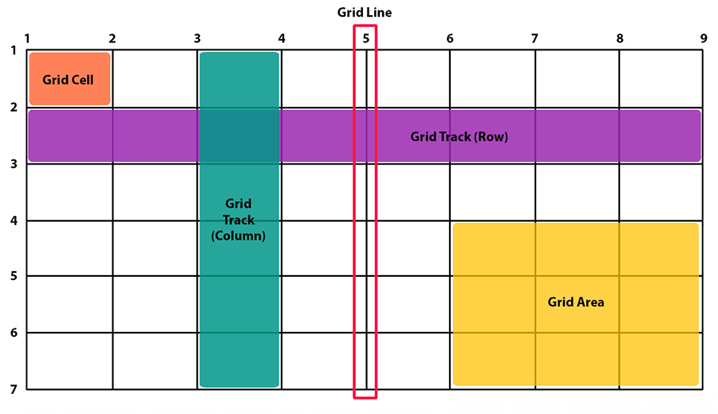Схема Grid сетки.
Описание Грид сетки
Для включения Grid, любому HTML элементу достаточно присвоить css свойство display:grid; или display:inline-grid;.
.grid { display: grid; }
.inline-grid { display: inline-grid; }
<div class="grid">
<div>display: grid</div>
</div>
Текст, в котором есть
<div class="inline-grid">
<div>display: inline-grid</div>
</div>
продолжение текста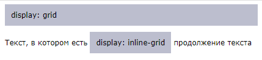
После включения grid свойства, внутри контейнера создаются grid сетка, а все вложенные элементы (первого уровня) станут ячейками сетки.
.grid { display: grid; }
<div class="grid">
<div>1</div>
<div>2</div>
</div>
Пример создания грид-блока с двумя колками и тремя рядами разных размеров:
.grid{
display: grid;
grid: 1fr 25% 30px / 40% 1fr; /* ряды / колонки */
grid-gap: 1em;
height: 200px;
}
<div class="grid">
<div class="item">item 1</div>
<div class="item">item 2</div>
<div class="item">item 3</div>
<div class="item">item 4</div>
<div class="item">item 5</div>
<div class="item">item 6</div>
</div>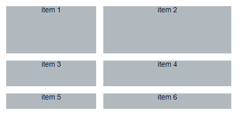
Особенности Grid
Элементы Grid сетки можно расставлять сразу на несколько полей сетки. Можно менять направление или расположения элементов в сетке. Колонкам и рядам можно давать имена. Можно создавать шаблон сетки и расставлять элементы по шаблону.
Для контейнера
Включает grid свойство для элемента. Под это свойство попадает сам элемент и вложенные в него элементы: затрагиваются только потомки первого уровня - они станут элементами grid контейнера.
grid и inline-grid отличаются тем что по-разному взаимодействуют с окружающими элементами, подобно display:block и display:inline-block. меню
grid-template-columns:
Указывают из скольки рядов (строк) и скольки колонок состоит сетка и какие у них размеры. Т.е. указывается сразу два понятия: сколько и какой размер.
В значении через пробелы указываются размеры: высота ряда (rows) или ширина колонки (columns). Сколько раз будет указан размер, столько будет рядов/колонок.
// синтаксис:
grid-template-rows: размер размер ...;
grid-template-columns: размер размер ...;
grid-template-rows: [line-name] размер [line-name] размер ... [last-name];
grid-template-columns: [line-name] размер [line-name] размер ... [last-name];
У двух этих свойств есть сокращенные записи:
Примеры значений:
// grid-template-columns: может принимать все те же значения
grid-template-rows: none;
grid-template-rows: auto auto;
grid-template-rows: 100px 1fr;
grid-template-rows: [linename] 100px;
grid-template-rows: [linename1] 100px [linename2 linename3];
grid-template-rows: minmax(100px, 1fr);
grid-template-rows: fit-content(40%);
grid-template-rows: repeat(3, 200px);
grid-template-rows: 200px repeat(auto-fill, 100px) 300px;
grid-template-rows: minmax(100px, max-content) repeat(auto-fill, 200px) 20%;
grid-template-rows: [linename1] 100px
[linename2] repeat(auto-fit, [linename3 linename4] 300px)
100px;
grid-template-rows: [linename1 linename2] 100px
repeat(auto-fit, [linename1] 300px) [linename3];
// глобальные
grid-template-rows: inherit;
grid-template-rows: initial;
grid-template-rows: unset;
Примеры:
Создадим сетку (контейнер) с тремя колонками и тремя рядами последняя колонка и ряд будут иметь одинаковое имя 'main'
.grid {
grid-template-columns: 100px 10% [main] 800px;
grid-template-rows: 100px 10% [main] 800px;
}
Если не указать имя, то ряд/колонка автоматом получает два порядковых числовых имени: положительное и отрицательное:
grid-template-columns: 40px 50px auto 50px 40px;
grid-template-rows: 25% 100px auto;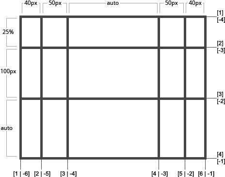
Укажем конкретные имена (обратите внимание как указывается имя для последней линии):
grid-template-columns: [first] 40px [line2] 50px [line3] auto [col4-start] 50px [five] 40px [end];
grid-template-rows: [row1-start] 25% [row1-end] 100px [third-line] auto [last-line];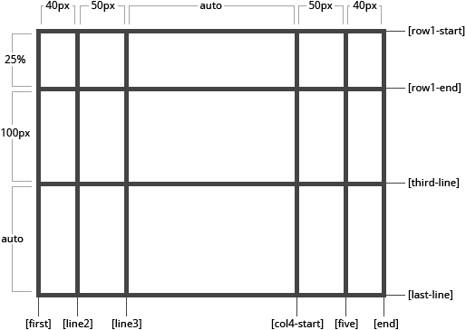
Меню может иметь не одно, а несколько имен, этот пример добавляет два имени row1-end и row2-start:
grid-template-rows: [row1-start] 25% [row1-end row2-start] 25% [row2-end];
Если в перечисление размеров колонок есть повторяющиеся части, то можно использовать функцию repeat():
grid-template-columns: repeat(3, 20px [col-start]) 5%;
// в результате получим:
grid-template-columns: 20px [col-start] 20px [col-start] 20px [col-start] 5%;
Если несколько строк имеют одно и то же имя, на них можно ссылаться по имени и порядковому числу:
.item {
grid-column-start: col-start 2;
}
fr позволяет указать размер относительный оставшегося свободного места в контейнере. В этом примере свободное место в контейнере делится на число указанных фракций (у нас 3) и для каждой определяется ширина. Так если ширина контейнера 90px то каждая колонка будет шириной по 30px.
grid-template-columns: 1fr 1fr 1fr;
Свободное пространство высчитывается после того как посчитаны жесткие размеры (включая разрывы). В этом примере размер свободно пространства высчитывается как ширина контейнера минус 50px.
grid-template-columns: 1fr 50px 1fr 1fr; меню
grid-template-areas:
Позволяет создать визуальный шаблон сетки. В этом свойстве задаются имена ячейкам, а затем элементы привязываются к этим именам через свойство grid-area: указываемое для отдельного элемента.
Синтаксис шикарен, потому что визуально показывает как выглядит сетка:
grid-template-areas: "имя имя2 имя3"
"имя имя4 имя5"
"имя none .";
// или можно так
grid-template-areas: "имя имя2 имя3" "имя имя4 имя5" "имя6 none .";
// или одинарные кавычки
grid-template-areas: 'имя имя2 имя3' 'имя имя4 имя5' 'имя6 none .';
Заметки:
Такая же логика работает и наоборот, если линиям указать имена дом-start и дом-end, то все что находится межу этими линиями превращается в область (ячейку) с именем дом.
grid-template-areas: также можно указывать в первом значении свойств:
Примеры:
Шаблон страницы. Создадим сетку с четырьмя колонками и тремя рядами. Весь верхний ряд будет шапкой (header), средний ряд будет контентом (main) и сайдбаром (sidebar), между которыми оставим место (.). И последний рад будет подвалом (footer).
.item-a { grid-area: header; }
.item-b { grid-area: main; }
.item-c { grid-area: sidebar; }
.item-d { grid-area: footer; }
.container {
grid-template-columns: 50px 50px 50px 50px;
grid-template-rows: auto;
grid-template-areas: "header header header header"
"main main . sidebar"
"footer footer footer footer";
}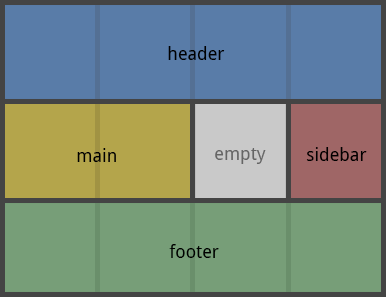
Размеры и области можно указывать одновременно:
.grid {
display: grid;
grid-template-rows: [header-top] minmax( 6em, auto) [header-bottom main-top] 1fr [main-bottom];
grid-template-columns: 1fr 30%;
grid-template-areas: "header header"
"main menu";
}
.header { grid-area: header; }
.main { grid-area: main; }
.menu {
/* прикрепление к области (ячейке) */
grid-area: menu;
/* такое же прикрепление, но к именам линий ряда */
grid-row: main-top / main-bottom;
/* или */
grid-row: menu-start / menu-end;
/* или */
grid-row: 2 / 3;
} меню
grid-template:
Позволяет разом указать три свойства: grid-template-rows, grid-template-columns и grid-template-areas.
// синтаксис:
grid-template: none;
grid-template: grid-template-rows / grid-template-columns;
grid-template: [ line-names? "строка" размер? line-names? ] ...
grid-template: [ line-names? "строка" размер? line-names? ] ... / [ line-names? размер ] ... line-names?
// то что в [] или до ? — можно не указывать
// ... — можно повторять
Это свойство можно заменить на сокращенное grid: grid-template-rows / grid-template-columns
Примеры:
В первом параметре (в рядах) можно указать шаблон (области). 25px - это высота ряда.
grid-template: "header header header" 25px
"footer footer footer" 25px
/ auto 50px auto;
Также можно указывать имена для линий ряда:
grid-template: [header-top] "a a a" [header-bottom]
[main-top] "b b b" 1fr [main-bottom]
/ auto 1fr auto;
// в результате получится вот это:
grid-template-areas: "a a a"
"b b b";
grid-template-rows: [header-top] auto [header-bottom main-top] 1fr [main-bottom];
grid-template-columns: auto 1fr auto; auto auto 1fr b header-top / a-start header-bottom / a-end / main-top / b-start main-bottom / b-end 1fr auto a-start / b-start a-end / b-end a a a b b
grid-template: не сбрасывает свойства для рядов/колонок по умолчанию: grid-auto-columns:, grid-auto-rows:, grid-auto-flow:. Чтобы это сделать, лучше вместо grid-template: использовать свойство grid:. меню
repeat() — функция
Позволяет повторять что-либо N раз. Используется при создании колонок/рядов в свойствах: grid-template-rows:, grid-template-columns:, grid-template:.
repeat( сколько_раз, что_повторять )
Варианты использования repeat():
repeat( 2, 50px ) // 50px 50px
repeat( 2, 50px 70px ) // 50px 70px 50px 70px
Ограничения по repeat():
repeat( auto-fill, 100px ) // можно
repeat( auto-fit, minmax(100px, 1fr) ) // можно
repeat( auto-fill, auto ) // нельзя
repeat( auto-fit, 1fr ) // нельзя
// можно
grid-template-columns: repeat(3, 50px 5%) repeat(auto-fill, 100px) repeat(4, 80px)
// нельзя (2 repeat с неизвестным количеством повторений)
grid-template-columns: repeat(auto-fill, 50px) repeat(2, 100px) repeat(auto-fit, 80px)
// можно (в первом repeat повторяется конкретная ширина в процентах)
grid-template-columns: repeat(4, 10%) repeat(auto-fill, 10em)
// нельзя (в одном repeat есть auto-fill, а в другом repeat повторяется заранее неизвестная ширина).
grid-template-columns: repeat(auto-fill, 100px) repeat(4, 1fr)
Примеры: меню
minmax() — функция
Позволяет задавать минимальное и максимальное значения для ряда/колонки. Используется в свойствах, где нужно задавать размер: grid-template-rows:, grid-template-columns:, grid-template:.
minmax( мин_значение, макс_значение )
Значение может быть:
Примеры:
Варианты использования:
grid-template-columns: minmax( 100px, 200px ) 1fr 1fr;
grid-template-columns: minmax( 200px, 50% ) 1fr 1fr;
grid-template-columns: minmax( 200px, 1fr ) 1fr 1fr;
grid-template-columns: minmax( min-content, max-content ) 1fr 1fr;
grid-template-columns: minmax( auto, auto ) 1fr 1fr;
grid-template-columns: repeat( auto-fit, minmax(200px, 1fr) );
Если указанное максимальное значение окажется меньше минимального, оно игнорируется и работает только мин. значение.
Подробное описание примеров смотрите в статье: как работает minmax(). меню
grid-gap:
grid-row-gap: задает разрыв между рядами.
grid-column-gap: задает разрыв между колонками.
grid-gap: задает разрыв для рядов и колонок разом. Это сокращение для двух предыдущих свойств. Если указать один параметр он будет выставлен для обоих значений.
// синтаксис:
grid-row-gap: размер;
grid-column-gap: размер;
grid-gap: размер размер; /* row column */
grid-gap: размер;
Размер может быть абсолютным (px, pt), относительным (%, em).
Примеры:
grid-column-gap: 10px;
grid-row-gap: 15px;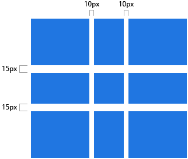
Заметка: префикс grid- будет удален и названия свойств станут: column-gap: и row-gap:. Chrome 68+, Safari 11.2 и Opera 54+ уже поддерживают свойства без этого префикса. меню
place-content:
Выравнивает ряды/колонки. Выравниваются ячейки сетки, не элементы внутри ячеек. Чтобы выровнять элементы, используйте: justify-items, align-items, place-items.
// синтаксис:
align-content: значение; // выравнивает ряды по вертикали ↓↑
justify-content: значение; // выравнивает колонки по горизонтали ←→
place-content: значение; // сокращенная запись: установит оба значения
place-content: align-content justify-content; // сокращенная запись
Значение может быть:
Редкие значения:
Примеры:
Полный синтаксис:
Выше для упрощения был не полный синтаксис, однако он покрывает 99% нужного.
// синтаксис:
align-content: normal | <distribution> | <overflow>? <position> | <baseline>
justify-content: normal | <distribution> | <overflow>? [ <position> | left | right ]
// <distribution> = space-between | space-around | space-evenly | stretch
// <overflow> = unsafe | safe
// <position> = center | start | end | flex-start | flex-end
// <baseline> = [ first | last ]? baseline
// то что в [] или до ? — можно не указывать
Все варианты значений:
align-content:
// базовое выравнивание
align-content: center;
align-content: start;
align-content: end;
align-content: flex-start;
align-content: flex-end;
align-content: normal;
// выравнивание по линии текста
align-content: baseline;
align-content: first baseline;
align-content: last baseline;
// распределение
align-content: space-between;
align-content: space-around;
align-content: space-evenly;
align-content: stretch;
// когда элемент перекрывает контейнер
align-content: safe center;
align-content: unsafe center;
// глобально
align-content: inherit;
align-content: initial;
align-content: unset;
justify-content:
// базовое выравнивание
justify-content: center;
justify-content: start;
justify-content: end;
justify-content: flex-start;
justify-content: flex-end;
justify-content: left;
justify-content: right;
align-content: normal;
// выравнивание по линии текста не имеет смысла
// распределение
justify-content: space-between;
justify-content: space-around;
justify-content: space-evenly;
justify-content: stretch;
// когда элемент перекрывает контейнер
justify-content: safe center;
justify-content: unsafe center;
// глобально
justify-content: inherit;
justify-content: initial;
justify-content: unset;
place-content:
/* базовое выравнивание */
/* align-content не может быть left или right */
place-content: center start;
place-content: start center;
place-content: end left;
place-content: flex-start center;
place-content: flex-end center;
/* выравнивание по линии текста */
/* для второго параметра (justify-content) не имеет смысла */
place-content: baseline center;
place-content: first baseline space-evenly;
place-content: last baseline right;
/* распределение */
place-content: space-between space-evenly;
place-content: space-around space-evenly;
place-content: space-evenly stretch;
place-content: stretch space-evenly;
/* глобально */
place-content: inherit;
place-content: initial;
place-content: unset;
развернуть ▾ меню
place-items:
Выравнивает элементы сетки - то что находится внутри ячеек сетки. Срабатывает для всех элементов grid. Чтобы выровнять сами ячейки (ряды колонки), используйте: justify-content, align-content, place-content.
// синтаксис:
align-items: значение; // выравнивает элементы по вертикали ↓↑
justify-items: значение; // выравнивает элементы по горизонтали ←→
place-items: значение; // сокращенная запись: установит оба значения
place-items: align-items justify-items; // сокращенная запись
Значение может быть:
Редкие значения:
Примеры:
Полный синтаксис:
Выше для упрощения был не полный синтаксис, однако он покрывает 99% нужного.
// синтаксис:
align-items: normal | stretch | [ <overflow>? <position> ] | <baseline>
justify-items: normal | stretch | <overflow>? [ <position> | left | right ] | <baseline> | legacy [ left | right | center ]
// <baseline> = [ first | last ]? baseline
// <overflow> = unsafe | safe
// <position> = center | start | end | self-start | self-end | flex-start | flex-end
// то что в [] или до ? — можно не указывать
Все варианты значений:
align-items:
// базовые значения
align-items: normal;
align-items: stretch;
// выравнивание позиции
// align-items не может быть left или right
align-items: center;
align-items: start;
align-items: end;
align-items: flex-start;
align-items: flex-end;
align-items: self-start;
align-items: self-end;
// выравнивание по линии текста
align-items: baseline;
align-items: first baseline;
align-items: last baseline;
// когда элемент перекрывает контейнер
align-items: safe center;
align-items: unsafe center;
// глобально
align-items: inherit;
align-items: initial;
align-items: unset;
justify-items:
// базовые значения
justify-items: auto;
justify-items: normal;
justify-items: stretch;
// выравнивание позиции
justify-items: center;
justify-items: start;
justify-items: end;
justify-items: flex-start;
justify-items: flex-end;
justify-items: self-start;
justify-items: self-end;
justify-items: left;
justify-items: right;
// выравнивание по линии текста
justify-items: baseline;
justify-items: first baseline;
justify-items: last baseline;
// когда элемент перекрывает контейнер
justify-items: safe center;
justify-items: unsafe center;
// выравнивание с приоритетом заимствования значения у родителя
justify-items: legacy right;
justify-items: legacy left;
justify-items: legacy center;
// глобально
justify-items: inherit;
justify-items: initial;
justify-items: unset;
place-items:
// базовые значения
place-items: auto center;
place-items: normal start;
// выравнивание позиции
place-items: center normal;
place-items: start auto;
place-items: end normal;
place-items: self-start auto;
place-items: self-end normal;
place-items: flex-start auto;
place-items: flex-end normal;
place-items: left auto;
place-items: right normal;
// выравнивание по линии текста
place-items: baseline normal;
place-items: first baseline auto;
place-items: last baseline normal;
place-items: stretch auto;
// глобально
place-items: inherit;
place-items: initial;
place-items: unset;
развернуть ▾ меню
grid-auto-columns:
Устанавливает размер для авто-создаваемых (неявных) рядов/колонок.
Колонки/ряды создаются автоматически, когда в сетке элементов больше чем помещается в определенные ряды/колонки (ячейки) или когда элемент размещается за пределы указанной сетки.
// синтаксис:
grid-auto-columns: размер;
grid-auto-rows: размер;
Возможные значения размеров смотрите в описании grid-template-rows: и grid-template-columns: — может быть px, em, %, fr и т.д.
Примеры:
Чтобы понять как создаются авто-ячейки сетки, давайте представим что у нас есть сетка 2x2 - 2 ряда и 2 колонки:
grid-template-columns: 60px 60px;
grid-template-rows: 90px 90px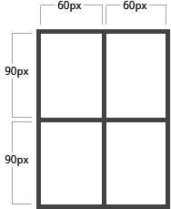
Теперь, попробуем разместить элементы в сетку указав им позиции через свойства:
.item-a {
grid-column: 1;
grid-row: 2;
}
.item-b {
grid-column: 5;
grid-row: 2;
}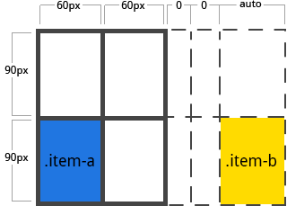
Элемент .item-b мы попросили разместиться в несуществующей колонке 5. У нас только 2 колонки, поэтому сетка автоматически расшириться и ей будут добавлены еще 3 колонки с auto шириной. Текущие свойства позволяют нам задать размеры для таких неявных колонок:
grid-auto-columns: 60px;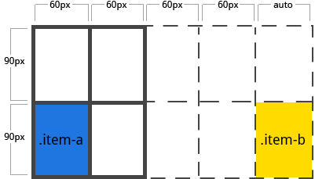
Интересный момент для неявных колонок рядов и repeat():
развернуть ▾ меню
grid-auto-flow:
Определяет логику добавления элементов в пустые ячейки.
Когда элементам конкретно не указано в какой ячейке (области) они должны быть расположены, то они размещаются в пустые ячейки. По умолчанию заполнение идет слева направо (→) до конца ряда, переход на следующий ряд и опять заполнение (похоже на то как мы читаем текст).
По умолчанию алгоритм row т.е. такой → ↓ →, можно сделать так ↓ → ↓.
// синтаксис:
grid-auto-flow: row | column | row dense | column dense
Примеры:
Допустим у нас есть такой HTML:
<div class="grid">
<div class="item-a">item-a</div>
<div class="item-b">item-b</div>
<div class="item-c">item-c</div>
<div class="item-d">item-d</div>
<div class="item-e">item-e</div>
</div>
Теперь, мы создали сетку с 5-ю колонками и двумя рядами и два элемента расположили в конкретные ячейки:
.grid {
display: grid;
grid-template: 60px 60px 60px 60px 60px / 30px 30px;
/* по умолчанию: grid-auto-flow: row; */
}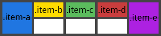
Теперь установим grid-auto-flow: column: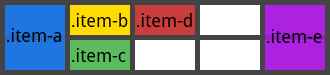 меню
grid:
Позволяет сокращенно записать свойства:
Т.е. в этом свойстве можно описать почти все свойства грид-сетки. Однако, тут можно описать свойства только для «явных» или «неявных» рядов/колонок, сразу для тех и других не получиться. Если нужно указать свойства для тех и других, то нужно дописывать соответствующие свойства в дополнении к grid:.
// синтаксис:
grid: none
grid: grid-template
grid: grid-template-rows / grid-template-columns
grid: grid-template-areas
grid: grid-template-rows / [auto-flow dense?] grid-auto-columns?
grid: [auto-flow dense?] grid-auto-rows? / grid-template-columns
// то что в [] или до ? — можно не указывать
Примеры:
grid: 'header header header header'
'main main main right right'
'footer footer footer footer';
// тоже что:
grid-template-areas: 'header header header header'
'main main main right right'
'footer footer footer footer';
grid: 100px 300px / 3fr 1fr;
// тоже что:
grid-auto-flow: row;
grid-template-columns: 200px 1fr;
grid: auto-flow dense 100px / 1fr 2fr;
// тоже что:
grid-auto-flow: row dense;
grid-auto-rows: 100px;
grid-template-columns: 1fr 2fr;
grid: 100px 300px / auto-flow 200px;
// тоже что:
grid-template-rows: 100px 300px;
grid-auto-flow: column;
grid-auto-columns: 200px;
Также можно указать более сложный, но удобный для настройки все и сразу:
grid: [row1-start] "header header header" 1fr [row1-end]
[row2-start] "footer footer footer" 25px [row2-end]
/ auto 50px auto;
// тоже что:
grid-template-areas: "header header header"
"footer footer footer";
grid-template-rows: [row1-start] 1fr [row1-end row2-start] 25px [row2-end];
grid-template-columns: auto 50px auto;
И еще варианты:
grid: repeat(auto-fill, 5em) / auto-flow 1fr;
grid: auto-flow 1fr / repeat(auto-fill, 5em);
grid: auto 1fr auto / repeat(5, 1fr);
grid: repeat(3, auto) / repeat(4, auto); меню
Для элементов
CSS свойства: float, display:inline-block, display:table-cell, vertical-align и column-* никак не влияют на элементы grid контейнера. У grid сетки свои правила...
grid-column:
Указывает положение элемента в сетке. Т.е. размещает элемент в указанную ячейку. Указывать нужно имя или номер линии к которой относится ячейка и к которой нужно прикрепить элемент.
grid-column и grid-row — это сокращение для свойств: grid-column-start/grid-column-end и grid-row-start / grid-row-end. Можно указать только первое (одно) значение, оно будет относиться к начальной линии и элемент будет растягиваться на 1 ряд/колонку (т.е. будет помещен в одну ячейку начальная линия которой указана).
// синтаксис:
grid-row-start: значение; // где начинается линия ряда
grid-row-end: значение; // где кончается линия ряда
grid-column-start: значение; // где начинается линия колонки
grid-column-end: значение; // где кончается линия колонки
grid-row: grid-row-start / grid-row-end;
grid-column: grid-column-start / grid-column-end;
// можно указать одно значение, второе значение будет span 1
grid-row: grid-row-start;
grid-column: grid-column-start;
Значение может быть:
Примеры:
.item-a {
grid-column-start: 2;
grid-column-end: five;
grid-row-start: row1-start
grid-row-end: 3
}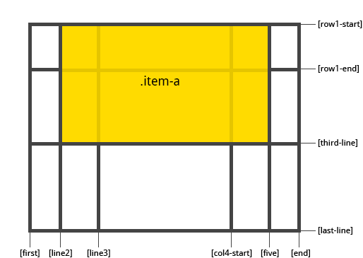
.item-b {
grid-column-start: 1;
grid-column-end: span col4-start;
grid-row-start: 2
grid-row-end: span 2
}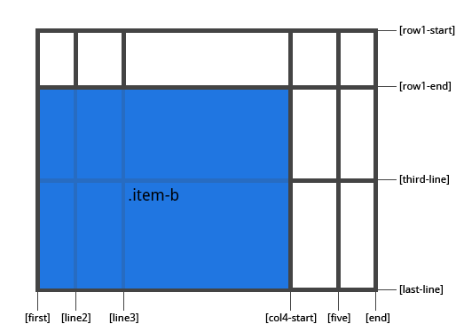
Если не установлены свойства grid-column-end/grid-row-end элемент по умолчанию будет растягиваться на 1 ряд/колонку.
Элементы могут перекрывать друг друга, в таких случаях приоритет можно выставить через z-index:.
Пример сокращенного указания линий.
grid-column: 3 / span 2;
grid-row: third-line / 4;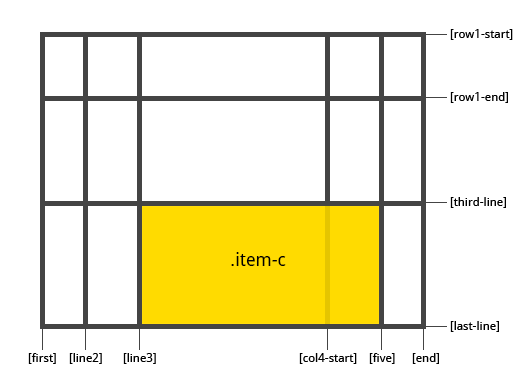 меню
grid-area:
Дает элементу имя. По имени элемент будет относится к области указанной в свойстве grid-template-areas:. Или в значении можно указать номер/имя линий.
// синтаксис:
grid-area: имя области;
grid-area: row-start / column-start / row-end / column-end;
Примеры:
grid-area: header;
// или так:
grid-area: 1 / col4-start / last-line / 6
place-self:
Выравнивает текущий элемент внутри ячейки. Применяется к отдельному элементу контейнера.
// синтаксис:
align-self: значение; // выравнивает элемент внутри ячейки по вертикали ↓↑
justify-self: значение; // выравнивает элемент внутри ячейки по горизонтали ←→
place-self: значение; // сокращенная запись: установит оба значения
place-self: align-self justify-self; // сокращенная запись
Значение может быть:
Редкие значения:
Примеры:
Чтобы выровнять все элементы контейнера сразу, используйте: align-items:, justify-items:, place-items:. Там же вы найдете описание для редко-используемых значений. меню
# Каркас HTML страницы
body {
display: grid;
grid: "header header header" 80px
"nav section aside" 1fr
"footer footer footer" 50px
/ 15% 1fr 18%;
min-height: 100vh;
}
header { grid-area: header; }
nav { grid-area: nav; }
section { grid-area: section; }
aside { grid-area: aside; }
footer { grid-area: footer; }
<body>
<header>header</header>
<nav>nav</nav>
<section>section</section>
<aside>aside</aside>
<footer>footer</footer>
</body>
# Каркас для игрового приложения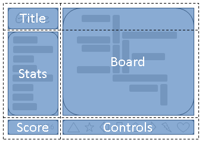
#grid {
/**
* Две колонки:
* 1. подстраивается под контент,
* 2. получает все оставшееся пространтсов
* (но не может быть меньше минимального размера контента в ней
или controls блока в этой же колонке)
*
* Три ряда:
* 1. подстраивается под контент,
* 2. получает все свободное пространство
* (но не может быть меньше минимального размера любого из блоков в этмо ряду)
* 3. подстраивается под контент.
*/
display: grid;
grid-template-columns:
/* 1 */ auto
/* 2 */ 1fr;
grid-template-rows:
/* 1 */ auto
/* 2 */ 1fr
/* 3 */ auto;
/* растянем на всю высоту */
height: 100vh;
}
/* указывает позиции блоков в сетке с помощью координат */
#title { grid-column: 1; grid-row: 1; }
#score { grid-column: 1; grid-row: 3; }
#stats { grid-column: 1; grid-row: 2; }
#board { grid-column: 2; grid-row: 1 / span 2; }
#controls { grid-column: 2; grid-row: 3; justify-self: center; }
<div id="grid">
<div id="title">Game Title</div>
<div id="score">Score</div>
<div id="stats">Stats</div>
<div id="board">Board</div>
<div id="controls">Controls</div>
</div>
Усложним задачу.
Теперь нам нужно сделать так чтобы при повороте мобильного устройства, каркас менялся и получалось так: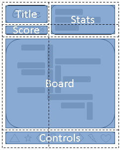
В этом случае удобнее будет использовать области Grid сетки.
/* книжная ориентация */
@media (orientation: portrait) {
#grid {
display: grid;
/* создадаим структуру сетки и укажем названия областей,
* Такая структура будет работать по умолчанию и подоходиь для альбомной ориентации.
*/
grid-template-areas: "title stats"
"score stats"
"board board"
"ctrls ctrls";
/* укажем размеры для рядов и колонок. */
grid-template-columns: auto 1fr;
grid-template-rows: auto auto 1fr auto;
height: 100vh;
}
}
/* альбомная ориентация */
@media (orientation: landscape) {
#grid {
display: grid;
/* создадаим структуру сетки и укажем названия областей,
* Такая структура будет работать по умолчанию и подоходиь для альбомной ориентации.
*/
grid-template-areas: "title board"
"stats board"
"score ctrls";
/* укажем размеры для рядов и колонок. */
grid-template-columns: auto 1fr;
grid-template-rows: auto 1fr auto;
height: 100vh;
}
}
/* расположим элементы в именованные областя сетки */
#title { grid-area: title; }
#score { grid-area: score; }
#stats { grid-area: stats; }
#board { grid-area: board; }
#controls { grid-area: ctrls; justify-self: center; }
<div id="grid">
<div id="title">Game Title</div>
<div id="score">Score</div>
<div id="stats">Stats</div>
<div id="board">Board</div>
<div id="controls">Controls</div>
</div>
Этот пример нужно просмотреть с телефона... меню
# Простой блок на Grid
# Масонри на Грид
Совсем без JS никак еще пока.
Сравнение Flex и Grid
В отличие от Flex, которая ориентирована на одну ось, Grid оптимизирована для двумерных компоновок: когда требуется расположить (выровнять) содержимое в обоих измерениях (по вертикали и горизонтали).
Кроме того, благодаря возможности явного позиционирования элементов в сетке, Grid позволяет выполнять кардинальные преобразования в структуре, не требуя никаких изменений HTML разметки. Комбинируя медиа-запросы со свойствами CSS, управляющими компоновкой контейнера grid и его дочерних элементов, можно адаптировать верстку под любые форм-факторы устройств.
Grid и Flexbox, имеют свои особенности и нельзя сказать, что одно заменяет другое. Скорее Флекс является дополнением к Грид, или наоборот.
Flexbox фокусируется на распределении пространства внутри одной оси, использует более простой подход к компоновке, может использовать систему упаковки строк на основе размера содержимого для управления своей вторичной осью и полагается на иерархию разметки. Тогда как Grid больше подходит для создания каркасов, потому что имеет более мощный и комплексный подход и в целом не зависит от иерархии разметки. В отдельных случаях Grid позволяет создать адаптивный макет, который невозможно создать с помощью Flex или как-то еще. меню
Поддержка браузерами
Grid поддерживается 94.8% браузерами, которые используются сегодня.
Чтобы проверить в css поддерживает ли текущий браузер Grid, можно использовать @supports (в IE не работает):
@supports( display: grid ) {
/* grid поддерживается браузером */
div { display: grid; }
}
@supports not( display: grid ) {
/* grid НЕ поддерживается браузером */
div { display: flex; }
Видео по Grid
Ссылки
Полезные ссылки по Grid:
Использовал при написании:
Статьи до этого: CSS
❮ Мониторинг UPTIME сайтов с другого сервера (с уведомлением)
Как работают уведомления в WordPress (пинги, трэкбэки) ❯
Yurets41
Спасибо большое! Отличная статья!
Александр
Все красиво и хорошо, вот только непонятно как бороться с переполнением ячейки этой сетки, когда текст заполняет всю ячейку и начинает наползать на нижнюю.
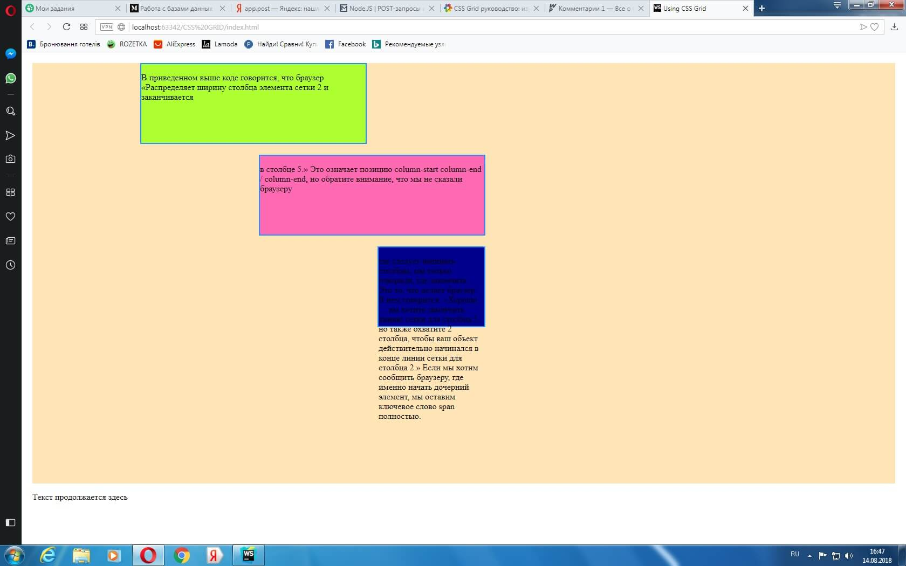
Kama8547
Текст укоротить, ячейку растянуть, спрятать перекрытую часть. Без кода не понятно как такое получается, высота фиксированная?
Александр
Оверфлоу решает проблему:
.child:nth-child(3){
grid-column: 3/4;
grid-row: 3/4;
background-color: darkblue;
border: dodgerblue 2px solid;
overflow: hidden;
}
Максим
Я никак не могу понять, как колонкам присваивается имя по координатам? У ячейки ведь 4 стороны, разве не надо для каждого угла указывать координаты или имя? Извиняюсь что немного запутано написал, просто никак не могу понять этот момент
Максим
На второй день всё-таки понял)
Евгений
Интересное тестирование по CSS GRID. Рекомендую к пройти: https://use-web.ru/testpractice.php?action=grid
Cтатья отличная. Спасибо за ссылку с грядками Хорошо помогло разобраться с разметкой столбцов и колонок.
Владимир
Кто хочет пощупать как работает grid. Вам сюда https://grid.layoutit.com/
Kama8547
Крутая ссылка, спасибо, добавил её в раздел ссылок.